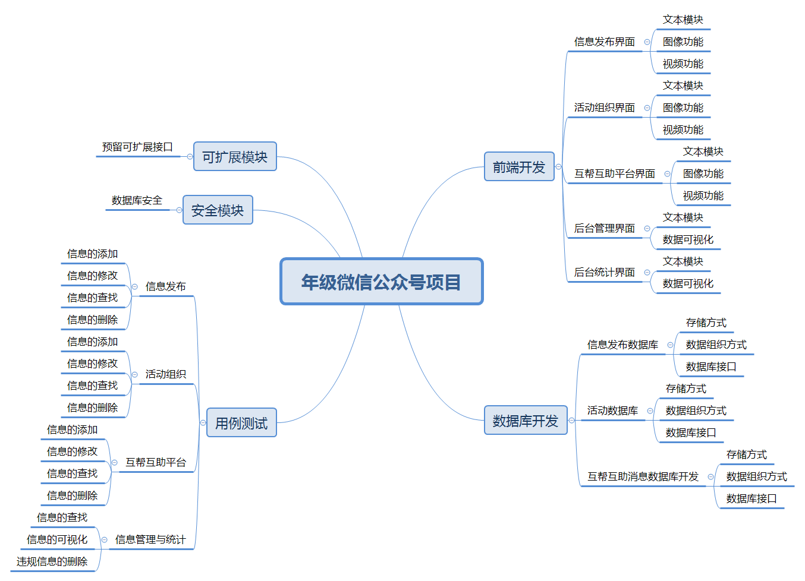
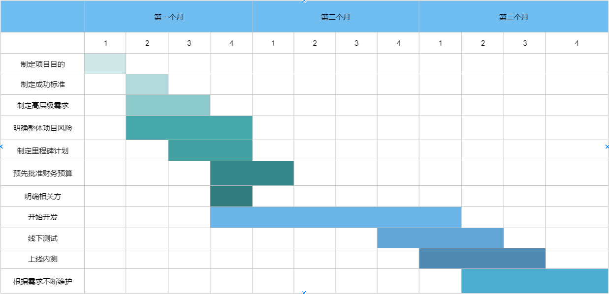

IT项目管理-5
年级微信公众号案例
你联合同学做一个年级微信公众号加强各班相互了解、联合活动等。请写一份两页的报告，描述收集需求的方法，并附上收集的需求跟踪矩阵(不少于五个需求)
收集需求的方法
收集需求是为实现目标而识别、 记录并管理相关方的需要和需求的过程。本过程的主要作用是，为定义产品范围和项目范围奠定基础，且仅开展一次或仅在项目的预定义点开展。
输入数据流：项目章程，项目管理计划（范围管理计划，需求管理计划，相关方参与计划），项目文件（假设日志，经验教训登记册，相关方登记册），商业文件（商业论证），协议，事业环境因素，组织过程资产
工具与技术：专家判断，数据收集，数据分析，决策，数据表现，人际关系与团队技能，系统交互图，原型法
输出数据流:需求文件，需求跟踪矩阵
年级微信公众号项目采用了以下方法收集需求：
数据收集
头脑风暴：首先，召集群体讨论，由全体学生代表发表意见，专人负责对这些意见进行记录。接着召开项目相关方开展讨论会。首先，先发表自己对年纪公众号项目的可能需求，接着针对收集到的学生代表意见进行分析。
问卷调查：由于群体讨论中，仅有学生代表发表了意见，所以得到的需求可能并不普适。因此，需要采用问卷调查的形式，向全年级学生进行需求调查。
标杆对照：浏览其他学院或学校的年级公众号，进行标杆对照。文本分析
商业计划：阅读项目章程，了解项目范围、时间、成本等，分析需求与高级需求。
业务流程：了解公众号的一般构建流程和标。决策
投票法：通过数据收集和文本分析等需求收集方法，项目组会收集到许多各种各样的需求，甚至有些需求是冲突的。此外，还有一些需求是小众或者实现难度较大的。对于这些收集到的需求，我们需要进一步地选择。通过投票的方法，保留年纪公众号项目重要的需求。
打分法：同样采取问卷的方式，征集项目参与者的意见。使参与者通过为各个需求打分的方式来对需求进行筛选。影响打分的因素有：需求的可操作性、需求的普适性、需求的创新型、需求的迫切性。需求呈现
思维导图：使用思维导图，使参与者和决策者能够直观看到各个需求以及他们之间的关联。社交与团队技能
名义小组：通过阅读项目章程提出问题，在需求分析的各个阶段收集方案并参与讨论，负责对需求的投票
观察与交流：利用实际工作场景或demo演示发掘需求，先开发出demo，请请一本年级同学进行体验，获取需求及改进建议。
需求跟踪矩阵
| 标识 | 关联标识 | 需求描述 | 业务需要、机会、目的和目标 | 项目目标 | WBS可交付成果 | 产品设计 | 产品开发 | 测试案例 |
|---|---|---|---|---|---|---|---|---|
| 1 | 1.1 | 能够实现年级信息的发布与管理 | 使学生更快捷地获取信息 | 为年级信息的查询提供途径 | 信息发布模块demo | 构建后端数据库、前端界面，维护消息列表 | 构建后端数据库、前端界面，维护消息列表 | 信息的发布、修改、删除、查找 |
| 1.2 | 能够使学生发起活动、组织活动 | 促进同学间的交流 | 便于学生发起、组织活动，增强学生间的交流 | 活动组织模块demo | 构建后端数据库、前端界面，维护活动列表 | 构建后端数据库、前端界面，维护活动列表 | 活动的创建、修改、删除、查找 | |
| 1.3 | 创建互帮互助平台，允许学生提问、解答 | 提供互帮互助的交流平台，为同学答疑解惑 | 提供互帮互助的平台 | 互帮互助模块demo | 构建后端数据库、前端界面，维护消息列表 | 构建后端数据库、前端界面，维护消息列表 | 消息的发布、修改、删除、查找 | |
| 2 | 2.1 | 能够有效管理平台消息，对于违法信息能够即使清理 | 构建绿色网络环境的需要 | 创建绿色网络环境 | 后台管理模块demo | 构建后端界面，能够调用数据库与消息列表 | 构建后端界面，能够调用数据库与消息列表 | 违规信息的删除、查找 |
| 2.2 | 能够统计信息浏览量 | 为管理员提供便捷的统计工具 | 便于管理员进行统计 | 后台统计模块demo | 构建后端界面，可视化 | 构建后端界面，可视化 | 信息统计 | |
| 3 | 3.1 | 信息安全性需求。发布的信息不会被篡改 | 安全性需要 | 保证公众号安全性 | 安全性分析报告 | 添加安全模块 | 添加安全模块 | 模拟网络攻击进行信息篡改 |
| 3.2 | 可扩展性需求。留出可扩展接口，方便对公众号添加新功能 | 可扩展性需要 | 维护年级公众号的可扩展性 | 设计接口报告 | 预留可扩展接口 | 预留可扩展接口 | 添加测试模块 |
年级微信公众号项目WBS
使用思维导图，为作业1或2构建WBS ，并使用项目管理工具制作WBS或根特图。并按要求检查工作包的可管理性，分解完整性。例如：检查测试、培训等。
WBS
使用思维导图构建WBS如下：

甘特图
整个项目的甘特图如下：

可管理性：
时间管理：从甘特图中，可以清晰地看出时间进度安排。具体到每一个需求的时间也是可以进一步计算的。
资源管理：项目中主要涉及的是人力资源。前端、后端、数据库开发分工明确、可管理。
预算管理：项目成本可计算，根据员工工资和项目时间可计算人力成本，服务器和数据库服务收费可查询。
分解完整性：WBS反映了所有任务诉求，且WBS中每项任务都是一个不可再分的体现了分解完整性。